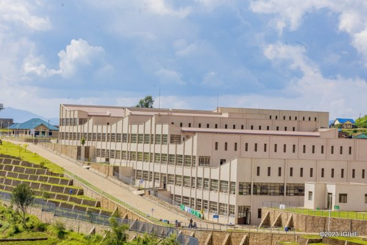

RWANDA – THE LAND OF A THOUSAND HILLS
Rwanda is mentioned as the Land of a Thousand Hills due to its diverse mountains
and hilly areas. This makes it important for Rwanda and its citizens to empower
development efforts through activities like Umuganda (community work).
At the end of every month, people gather for community work. Everyone plays a role
by cleaning roads, cutting bushes, making new village roads, and especially planting
trees on a large scale. Even leaders attend and reports are submitted.
Rwanda is one of the developing countries in Africa. It has hosted major events like
UCI 2025 and festivals such as
GIANT OF AFRICA 2025. Rapid improvement is linked to favorable weather
conditions supported by tree planting and reducing greenhouse effects.
Tree plantation should be reinforced, and deforestation should be avoided.
People should use alternative energy sources like gas and electricity instead of charcoal.
Table Showing the Use of Gas and Charcoal
| Kigali |
Rubavu |
Musanze |
Gas 80%
Charcoal 20% |
Gas 60%
Charcoal 40% |
Gas 73%
Charcoal 27% |
Other important sectors include tourism, industry, trade, transportation,
education, and infrastructure development.
- Industrial sector
- Trade sector
- Transportation sector
- Education sector
- Infrastructure
Construction of schools and hospitals helps improve accessibility
and equal use of resources.
